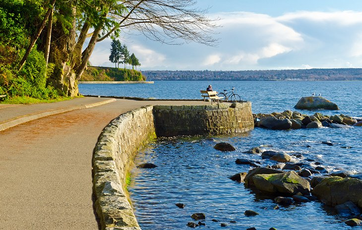
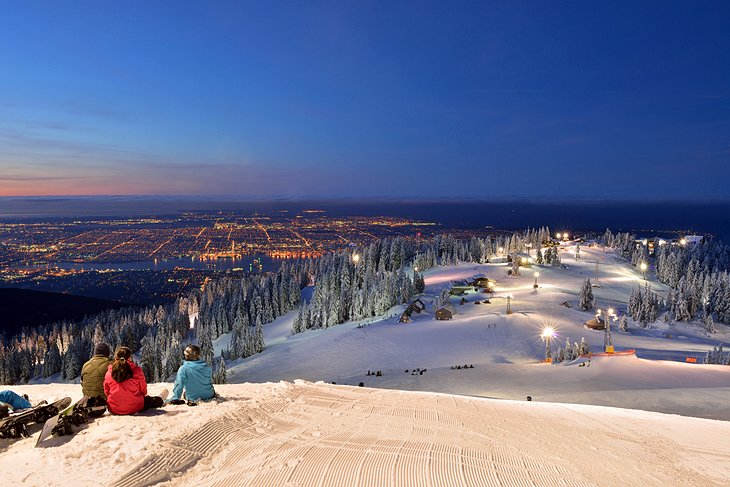
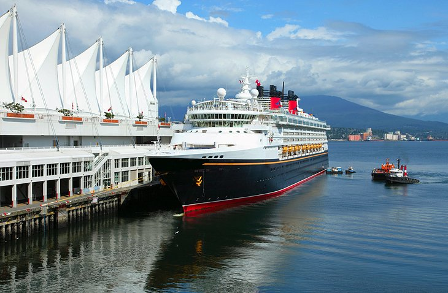
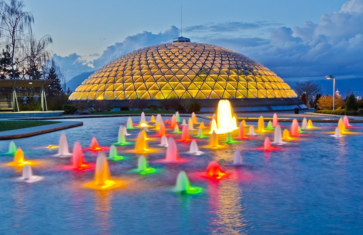

Stanley Park
Stanley Park is a lush peninsula of huge trees adjacent to Downtown
Vancouver. If you are looking to get outside and enjoy some nature,
this is the best place to visit in Vancouver. A paved seawall path
encircles the green space and is a wonderful and exciting place to
explore.

Grouse Mountain
In both winter and summer, Grouse Mountain offers an unmatched
panorama in clear weather. That's especially so in the evenings when
the city lights are on. A gondola operates daily running from street
level to the summit, where wildlife await mountaintop explorers.

Canada Place
If you arrive in Vancouver on a cruise ship, Canada Place is where
your trip begins. The unusual roof design creates the impression of
a huge sailing vessel. The architecturally remarkable structure is
part cruise ship terminal, and part convention center.

Queen Elizabeth Park
The center of Queen Elizabeth Park, Little Mountain, marks the
highest point in Vancouver, and its elevated position affords
excellent views of the city center and the mountains to the north.
Things to do in the park include pitch-and-putt golf, tennis and
disc golf.